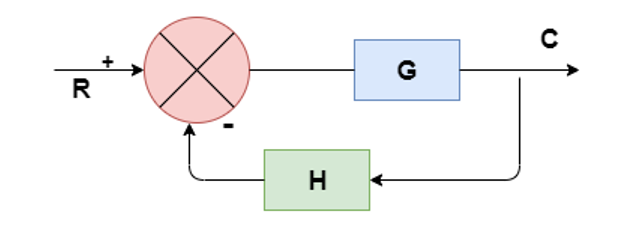
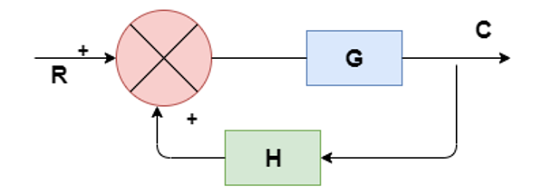

Procedure
To demonstrate the technique of block diagram reduction to simply complex systems by
using visual illustration in virtual lab.
- When blocks are connected in cascade the reduced gain is Gn = G1 * G2 * …*Gn
- When blocks are connected in parallel the reduced gain is Gn = G1 + G2 + …+Gn
- When take-off point is shifted after the gain block, then the reduced gain Gn is modified by
adding a block of transfer function ‘1/G’ in series with the signal taking off from that point
- When take-off point is shifted before the gain block, then the reduced gain Gn is modified by
adding a block of transfer function ‘G’ in series with the signal taking off from that point.
- When summing point is shifted after the gain block, then the reduced gain Gn is modified by
adding a block of transfer function ‘G’ before the summing point.
- When summing point is shifted before the gain block, then the reduced gain Gn is modified by
adding a block of transfer function ‘1/G’ before the summing point.
- In order to eliminate the negative feedback loop in a closed loop system having the feedback H,
the block diagram is modified by

C(S) / R(S) = G / (1+GH),
where C(S) is the output, R(S) is the input and G is the gain block.
- In order to eliminate the positive feedback loop in a closed loop system having the feedback H, the block diagram is modified by

Steps for Reduction
- Rule 1 − Check for the blocks connected in series and simplify
- Rule 2 − Check for the blocks connected in parallel and simplify
- Rule 3 − Check for the blocks connected in feedback loop and simplify.
- Rule 4 − If there is difficulty with take-off point while simplifying, shift it towards right.
- Rule 5 − If there is difficulty with summing point while simplifying, shift it towards left.
- Rule 6 − Repeat the above steps till you get the simplified form, i.e., single block.